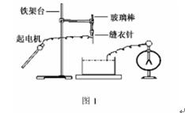
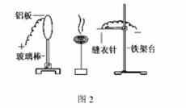

我们知道在静电学中，导体带电时，导体表面突出和尖锐的地方，电荷分布比较密集，使其附近形成很强的电场。导体尖端附近空气中残留的正负离子在强电场的作用下发生剧烈的运动，并与空气中的气体分子碰撞，将空气分子电离成许多新的正负离子，那些与尖端带同种电荷的离子，受到排斥，远离尖端，形成“电风”。与尖端带异种电荷的离子受到吸引，奔向尖端，与尖端上的电荷中和，这相当于导体从尖端失去电荷，这就是尖端放电。利用尖端放电现象，我们可以完成几个有趣的实验。
(1)可以这样使水带电
实验装置如图1所示，将缝衣针固定在有机玻璃棒上，玻璃棒用夹子固定在铁架台上，针下方放一只盛满清水的塑料盆，塑料盆放在绝缘板上针尖端距水面约5cm~10cm ，用导线将针与感应起电机的一极相连，再将一根导线一端与验电器相连，另一端裸露部分插入水中。转动起电机，由于针的尖端放电，使水带上同种电荷，验电器箔片逐渐张开。

(2)模拟静电除尘
实验装置如图2所示，取圆形铝板一块固定在绝缘支座上(绝缘支座可用玻璃棒固定在底座上制成，在中学物理实验室中易找到，本文后几个实验中均用到绝缘支座)，将缝衣针装上塑料棒后固定在铁架台上，调节铝板与针尖端间距6cm~8cm ，用导线将铝板和缝衣针分别与感应起电机相连，将点燃的蚊香放在铝板和针之间。让起电机起电，使铝板和缝衣针带电，蚊香烟被铝板吸附，若停止起电，烟又袅袅上升。

(3)旋转的风车
取两个易拉罐，剪一部分铝皮，将铝皮碾压平整，剪出一直径约8cm 的圆，再剪成图3a 样式的风车，尽量使叶片对称，在其中心处打一小孔，嵌上子母扣作支撑轴承，取缝衣针固定于绝缘支座上，针尖端顶在子母扣的凹坑处，实验装置如图3b所示。实验时，用导线将针与起电机一极相连，转动起电机，起电后，由于叶轮的尖端放电，在反冲作用下，风车旋转起来。

(4)电风驱动的纸杯
取一个一次性的薄纸杯，在杯底中心处打一小孔，嵌上子母扣作支撑轴承。取自行车辐条一根，一端挫尖，另一端固定于小木块上，尖端顶在子母扣的凹坑里，再取两片大些的易拉罐铝皮，碾压平整，分别剪成长约10cm ，宽约4cm 的长方形，而后剪成排针状，将两个排针用塑料夹固定在绝缘支座上，整个实验装置如图4所示。排针尖距纸杯约1cm ，两个排针的尖端指向纸杯的切线方向，实验时，用两根导线分别将两排针与起电机相连，不断摇动起电机。由于排针的尖端放电，形成两股电风从两侧吹向纸杯，纸杯旋转起来。本实验在较干燥的天气里进行，容易成功。
(5)点不着的酒精棉
如图5所示，将两个装有绝缘柄的圆形薄铝板(可用易拉罐皮制作)用夹子一上一下固定在绝缘支座上，板面平行，间距约4cm 。将玻璃棒固定在支座上，用导线把两板分别与起电机两极相连。实验时，取一块浸了酒精的脱脂棉球，放在下板上，不断摇动起电机，棉球与上板间出现啪啪的放电声，片刻，酒精棉将被电火花点燃。上述实验中，若将比棉球稍高的针状金属物(如图钉)放在下面金属板上，摇动起电机，同样的酒精棉无法点燃，此实验也可用来说明避雷针的原理。